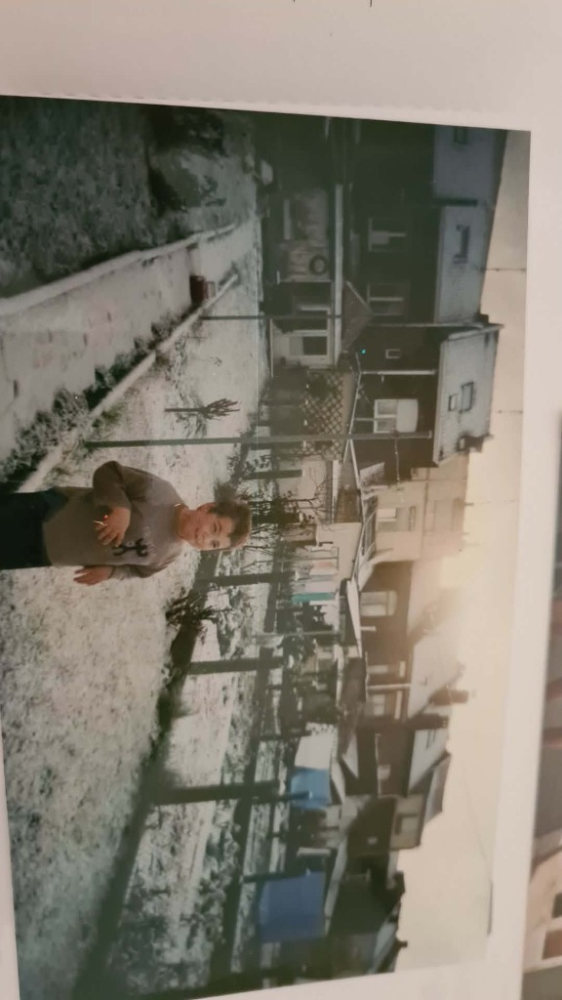
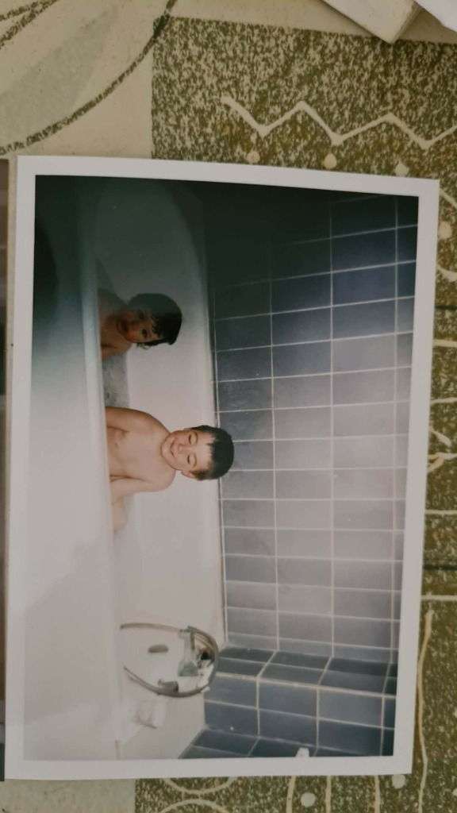
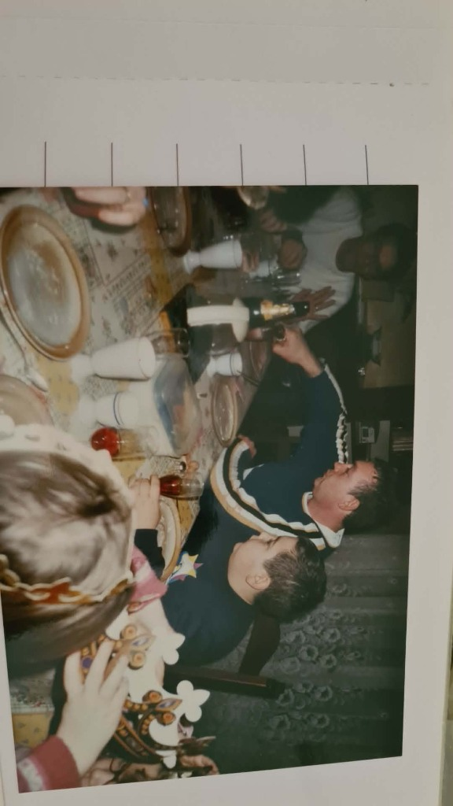
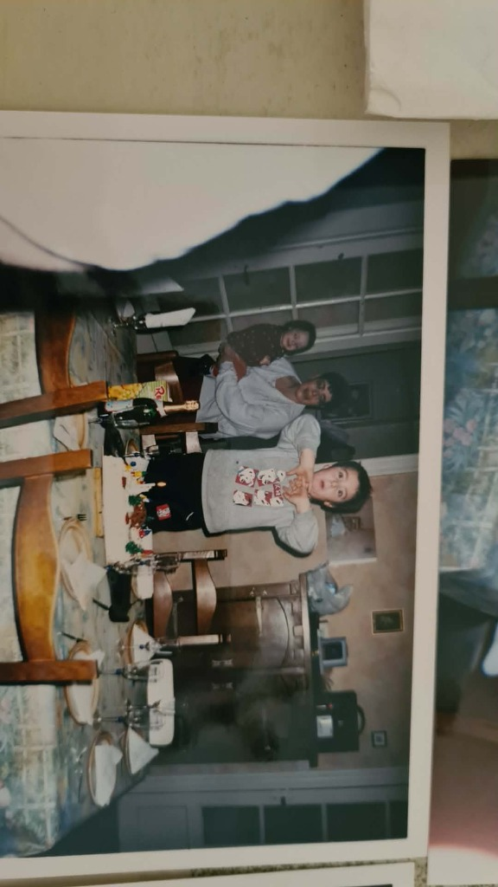
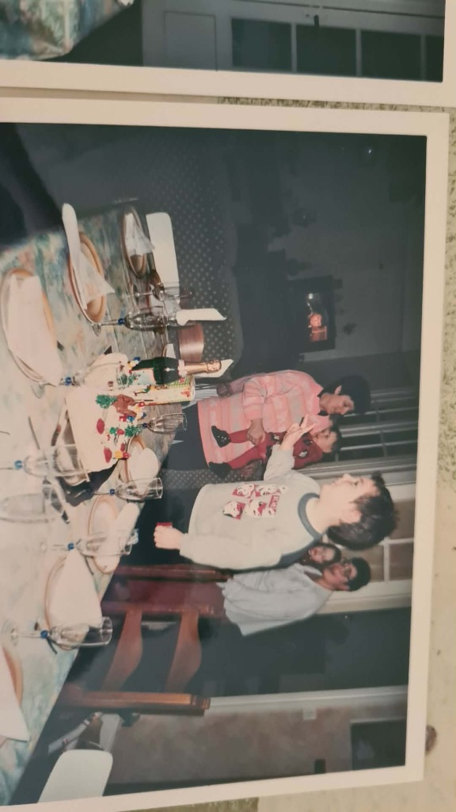

Salut, je suis Raphaël
Un développeur créatif passionné par les interfaces interactives, les animations fluides et le partage de belles histoires. Bienvenue dans mes souvenirs.
Mon Enfance
Né et grandi dans un cadre familial chaleureux, j'ai développé très tôt une grande curiosité pour le monde qui m'entoure. Qu'il s'agisse de mes premiers pas sous les flocons de neige dans le jardin ou de moments de pur bonheur partagés, mon enfance a jeté les bases de ma créativité et de mon imagination.
Chaque souvenir, capturé sur le vif, raconte une époque de découverte et de complicité simple.


Souvenirs de Famille
Les fêtes de fin d'année, les éclats de rire autour d'une grande table, la galette des rois et les gâteaux d'anniversaire... Ces moments de célébration partagés en famille sont les repères de mon enfance.



Mon Parcours
Premières lignes de code
Coup de foudre pour HTML, CSS et JavaScript. Conception de petites animations et d'applications simples.
Professionnalisation
Début des projets professionnels pour des clients, intégration des frameworks modernes et conception d'API.
Technologie Créative
Orientation vers le design interactif haut de gamme, les animations physiques complexes et l'optimisation des performances.
Exploration Continue
Collaboration sur des projets internationaux d'envergure, création d'outils frontend et exploration des technologies graphiques WebGL/WebGPU.
Passions & Loisirs
Open Source
Contribution à des paquets communautaires, publication de templates modernes et exploration des technologies d'optimisation.
Photographie
Capture des lignes géométriques urbaines, des contrastes de lumière et des paysages durant mes explorations.
Voyages
Découverte de nouvelles cultures, randonnées en pleine nature, dégustation de spécialités et inspiration graphique.